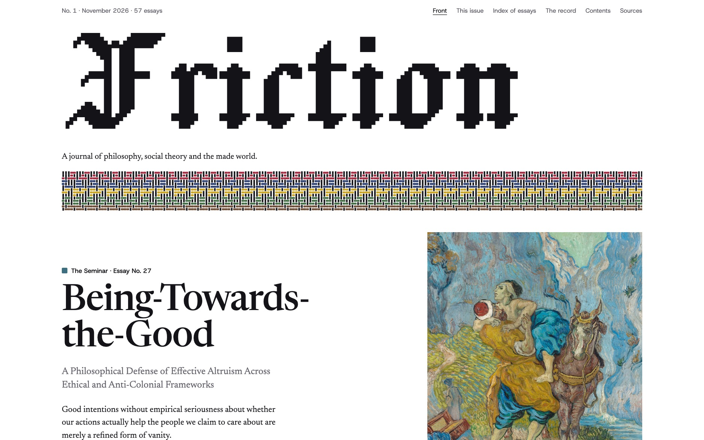
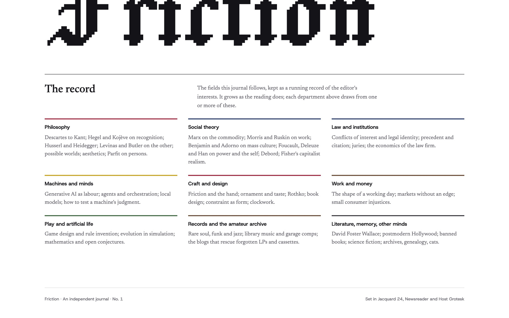
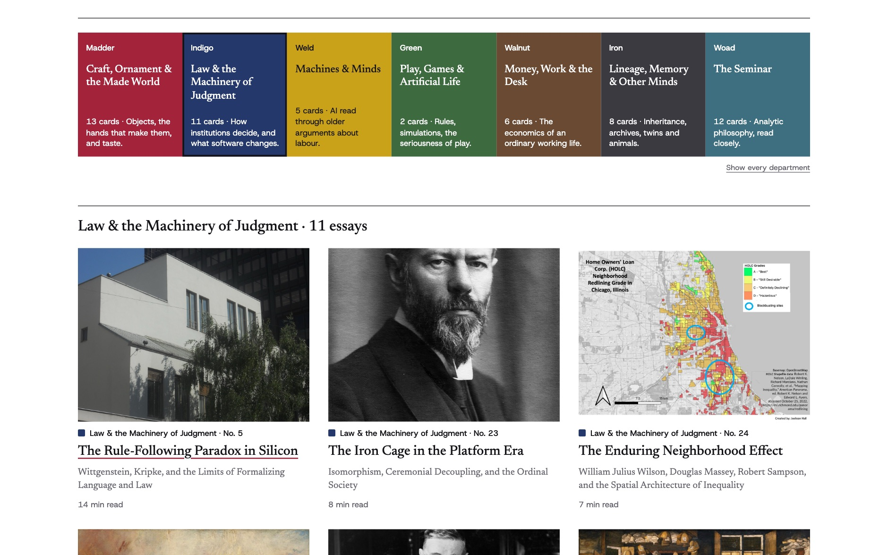
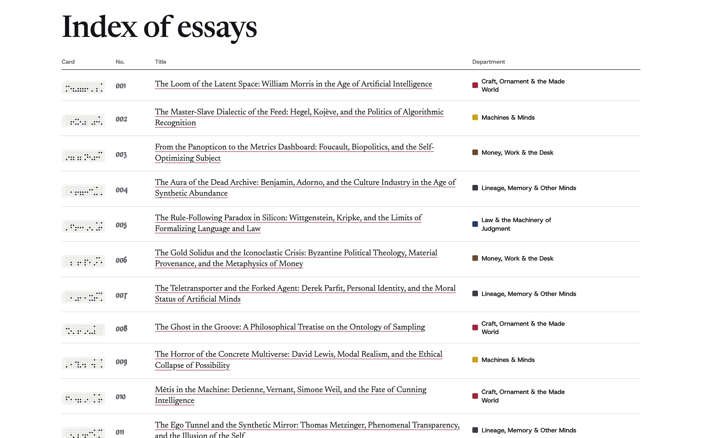

Friction
my intellectual interests, rebuilt from my digital archive
My intellectual life, rebuilt from my own digital archive. Claude read my college papers, syllabi and about 2,150 bookmarks and recorded every interest it found. That record became Friction, a journal of 57 long essays in seven departments, from William Morris and machine learning to Darwin’s worms, the law of conflicts of interest and a treatise on taste.
Read FrictionSee the record of interestsfrictionreview.com. 57 essays, light and dark, on a phone too.





What it is
Friction is my intellectual life rebuilt from my own digital archive. Ten years of reading and thinking were scattered across college papers, course syllabi in Google Drive and about 2,150 Chrome bookmarks going back to 2014. I had Claude go through all of it and write down every interest it could find, then turned that record into a journal: 57 long essays in seven departments, published at frictionreview.com.
One department runs from William Morris on useful work to the ontology of the sample and Earl Sweatshirt’s broken bars. Another takes Wittgenstein’s rule-following problem into legal AI and follows the law of fiduciary loyalty, hearsay and precedent. Others cover Hegel in the social feed, Byzantine gold coins, Darwin’s worms and Parfit’s teletransporter.
Where it came from
The record came first. Claude read my USC syllabi and papers, my Thematic Option work and every bookmark, and wrote each interest down with its evidence. It marked each one confirmed (I wrote or said it), shown (I built it, bought it or kept reading about it) or inferred (a guess for me to check). The bookmarks alone surfaced hundreds of New Yorker long-form pieces, a crate-digger’s archive of rare soul and library-music blogs, Hume, Kant and Wittgenstein, Heidegger and Butler, Milton, Blake and Ovid, and Bergman and Wenders.
Many of the essays are my old college papers taken all the way: the David Lewis paper from Kadri Vihvelin’s possible-worlds seminar, the Descartes and Leibniz midterm from Janet Levin’s early modern course, my aesthetics paper, a 2016 essay on King Lear and a first-year essay on Darwin’s earthworms. Others give their own essay to a thinker from the record, like Foucault, Benjamin and Adorno, Graeber, Metzinger or Adrienne Rich. Gemini wrote the essays from the same syllabi and readings I had. For the seminar papers it read the assigned work and, mostly without being told, reached the conclusions I had reached years ago.
The seven departments
Craft, Ornament & the Made World
Morris and machine learning, the sample as an art object, Earl Sweatshirt, Henry James’s Golden Bowl, outsider art, Adrienne Rich, deadpan and kitsch, and a book-length treatise on taste.
Law & the Machinery of Judgment
Rule-following and legal AI, the Talmudic page as hypertext, Weber’s iron cage, legal fictions, fiduciary loyalty and conflicts of interest, hearsay, precedent and the politics of classification.
Machines & Minds
Hegel’s master and slave in the feed, Lewis’s possible worlds, proof by computer, the epistemology of bullshit and synthetic text, and boredom as a habitat for thought.
Play, Games & Artificial Life
An argument against video games from Plato’s cave, and how points, streaks and rankings capture what we value.
Money, Work & the Desk
Foucault and the metrics dashboard, the Byzantine gold solidus, Graeber on debt, the myth of the rational agent, wedding bands and utility, and boilerplate contracts.
Lineage, Memory & Other Minds
Benjamin’s dead archive, Parfit’s forked mind, Metzinger’s ego tunnel, The Zone of Interest, folktale databases, the virtue of forgetting, Darwin’s worms and developmental plasticity.
The Seminar
Close readings of the USC philosophers whose work I studied: Mark Schroeder, Kadri Vihvelin, James Van Cleve, Ed McCann, Stephen Finlay and Ralph Wedgwood, plus blame, theodicy, moral deference and a defence of effective altruism.
How it reads
A pixel blackletter masthead over plain white pages, with a dark mode. The departments are named for natural dyes: madder, indigo, weld, green, walnut, iron and woad. As you read, the margin weaves a strip of cloth in the essay’s colours, with a pattern taken from the essay’s own text. Every essay has pictures placed beside the paragraph they belong to, about 150 in all, mostly public-domain paintings, prints and photographs: Goya’s Disasters of War, Rembrandt’s Syndics, the Leviathan frontispiece, Daguerre’s first photograph of a person.
Sources you can check
The essays cite 301 works. Every outside link was checked against the work it claims to be through Crossref and Open Library, and links that pointed at the wrong paper are hidden. Twenty-three public-domain texts the essays lean on, including Hume, Kant, Locke, Milton, King Lear, Darwin and Blake, are hosted as reader pages, each labelled with the edition actually hosted.
Claude Opus 5.5 built the record of interests from my archive, then designed and built the journal. A team of Sonnet builders with Haiku checkers added the navigation, the citation checks and the Sources page. Gemini wrote the essays.